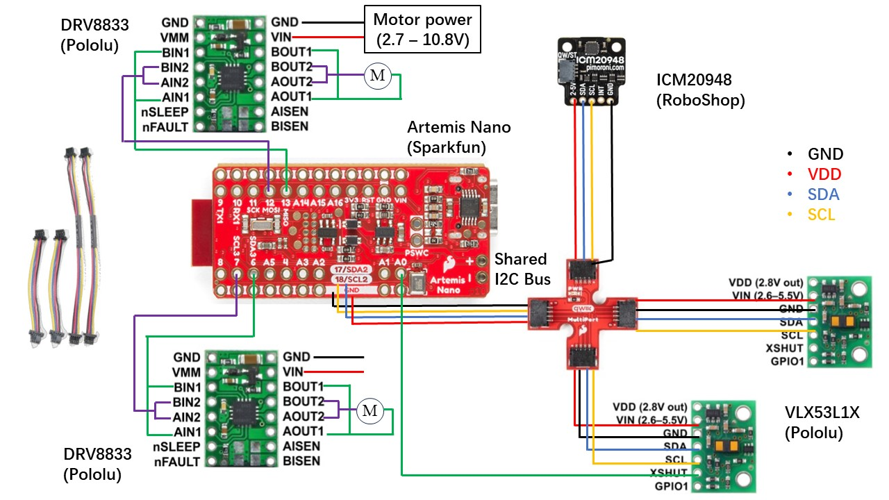
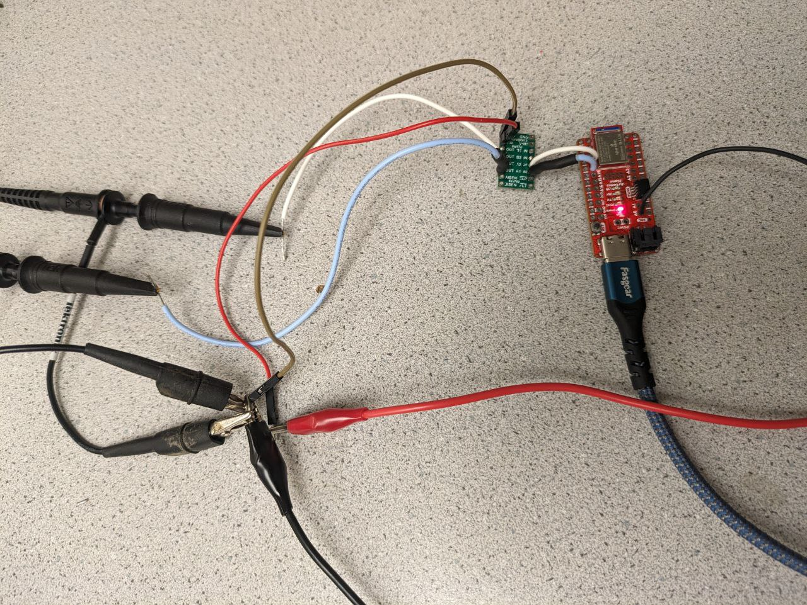
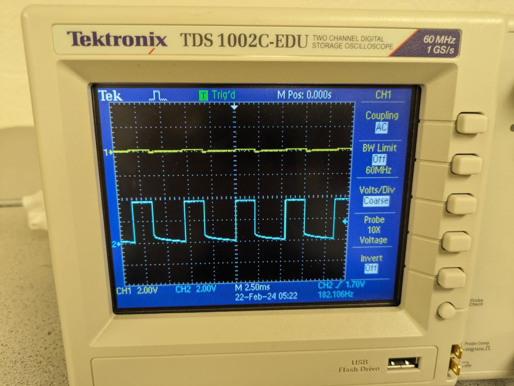
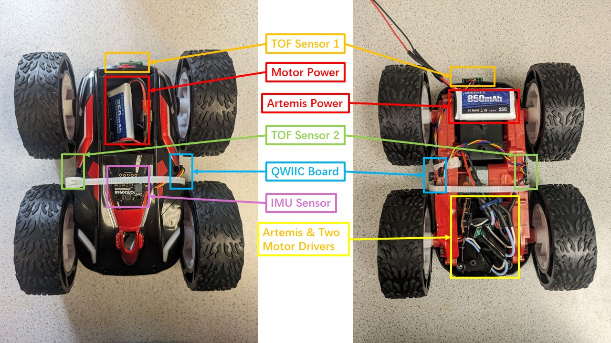
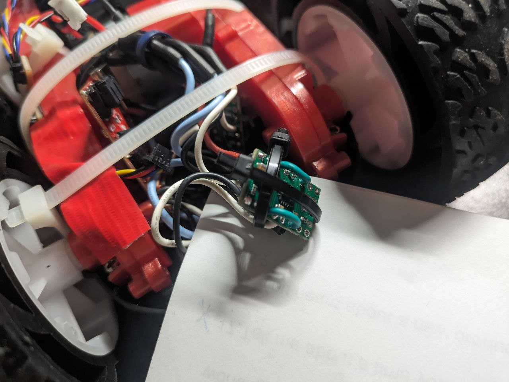

Objective
The aim of this lab is to test two motor drivers, integrate them into the Artemis board, and utilize them to drive the two motors of the car. The placement of other components is also finalized. A open-loop control is then performed through a pre-programmed series of moves.
Prelab

The diagram of the intended connections between the components is shown above. Note that in practice, the two motor drivers
are connected in parallel to the same motor power, which is not fully reflected in the diagram due to layout constraints.
Also note that the Artemis and the motor drivers are powered by different batteries, as the motors consume power much
more quickly than the Artemis board. Pin 6, 7, 12, 13 are selected as the motor driver's inputs since they support PWM and
are distributed on both sides of the Artemis board to avoid overcrowding the soldering.
Another noteworthy thing is that the two inputs and outputs of each dual motor driver are parallel-coupled, which means
each motor is driven using two channels. This ensures sufficent current is provided to the motor without overheating the chip.
Lab Tasks
Single Motor Testing
Before integrating the motor drivers into the car, it is essential to test their functionality. One motor driver's inputs
were connected to Artemis pins 12 and 13 as described above, while the outputs were hooked up to
the oscilloscope as shown in the following figure. At this point, the motor was not powered by batteries;
instead, an external DC power supply was used to make debugging easier. The input voltage was set to 3.7V, the same as
the battery would supply.

The above code snippet was run to generate PWM signals and the display on the oscilloscope is shown below.

Since analogWrite() accepts a duty cycle value ranging between 0 (always off) and 255 (always on), a value of 100
corresponds to approximately 40% duty cycle, which aligns correctly with the channel 2 waveform in the figure. On the other hand,
channel 1 displays the output signal corresponding to pin 13, which is indeed set to a 0% duty cycle as intended.
Once the basic functionality was confirmed, the outputs of this motor driver were connected to both ends of a single
motor, which was then powered by a battery. Running the following code results in the behavior shown in the video, where
the wheels on one side of the car can rotate in both directions at varying speeds, as controlled.
Double Motor Testing
The same process was repeated for the second motor and motor driver, with the motor inputs connecting to Artemis pins 6 and 7.
With a 850mAh battery powering both motor drivers, the following code snippet resulted in the expected behavior shown in the video.
Soldering and Wiring
All components including the Artemis board, sensors, motor drivers and batteries were then secured on the robot.
The diagram below shows labeled images of the robot's front and back. The Artemis board and two motor drivers are placed
inside the original compartment of the car's control PCB. The two TOF sensors are mounted at the front and
on the side (between the two wheels) of the car, while the IMU is mounted at the back. The positions of the two
batteries are also indicated. To manage the numerous wires, some zip ties are used to keep the wiring tidy
and ensure that no parts of the car stick out too much and touch the ground when the car flips over.

During subsequent functionality testing, it was found that sometimes both motor drivers would overheat and the robot
would not respond as expected to control commands. It was later discovered that this was due to the motor drivers not
sharing a common ground with Artemis. However, even after connecting the ground wires, this issue would still occur at times.
After checking the soldering, no short circuits were found.
It was then considered that the proximity of the two motor drivers in the same compartment might cause them to touch and
short circuit when the robot was running. The solution, as shown in the picture below, was to use two zip ties to create a small enclosure
for one of the motor drivers, preventing them from touching and causing a short circuit.

Lower Limit PWM Values
The lower limits of PWM values required for the robot to overcome friction and start moving, as well as for on-axis
rotation, was determined through a hardcoded exhaustive method. In the following code, the loop() function
contains an if statement with three blocks, each used for different tests. During each test, the other two blocks were
commented out. By adjusting the values of the two constant integer variables and repeatedly experimenting, the lower limits
of the PWM values for the two cases were determined. Note that, though, these lower limit values can be influenced by various factors,
such as the material of the floor and the remaining power of the motor battery.
To make the car overcome friction and start moving, as shown in the video below, the lower limit PWM value obtained was 40,
corresponding to approximately 15.7% duty cycle.
To make the car do on-axis turns, as shown in the second block of the loop() function in the code above, the spinning directions of
the two motors were set to be opposite. In this case, the force required to overcome friction was surprisingly larger. The measured lower
limit PWM value was 180, corresponding to approximately 70.6% duty cycle, and the behaviour is shown below. Otherwise, the car would only
move very slowly in place, and might not even complete a full rotation within twenty senconds.
Calibration Demonstration
Due to hardware reasons, the spin rates of the two motors are different. When the same PWM value is assigned to both
motor drivers, the car is expected to move forward in a straight line; however, in reality, it clearly drifts to the
left, which means the right motor spins faster than the left one. Therefore, a linear calibration factor was introduced,
where the PWM value received by the left motor is equal to the PWM value received by the right motor multiplied by this
factor. After repeated testing, it was determined that the value of this factor is 1.35. The video below shows the car
following a straight line for 6 feet after being corrected with this value.
Open-Loop Control
After the above tests had been completed, some basic movements were encapsulated into functions, including stop, move forward, move
backward, clockwise turning and counterclockwise turning, as shown in the code below. Then, some open-loop, untethered
control of the robot was executed, demonstrated in the video.
Additional Task: analogWrite Frequency
Based on the oscilloscope display in the previous section on Single Motor Testing, one horizontal grid in the graph
represents 2.50 milliseconds, and one PWM cycle takes approximately 2.2 grids, or 5.5 milliseconds. Therefore, on the
Artemis board, the frequency generated by the analogWrite() is approximately 181 Hz. It is adequately fast for the
motors, and also for the ToF sensors since they sample at a time intervel of about 20 milliseconds. However, if control based on
IMU readings is required, the current PWM signal may not be fast enough and could become a bottleneck for the robot to
respond more quickly. If such a requirement exists, manually configuring the timers to generate a faster PWM signal may
be useful.
Additional Task: Lower Limit PWM Value Once in Motion
Since static friction is greater than kinetic friction, the voltage required to start the robot is higher than
the voltage needed to keep the robot moving. After successfully starting the robot by running it for one second with the previously measured minimum start PWM value
of 40, the PWM value was then decreased and repeatedly tested, until the minimum value that could maintain the robot's
continued movement was determined. The code snippet is shown below, and the found PMW lower limit value is 28. The robot's
performance under this value is demonstrated in the video below.
Discussion & Conclusion
In this lab, I completed the soldering and hardware layout of a complete embedded project independently for the first time, which was
very helpful for me to establish relevant skills and knowledge. Through practice, I gained a deeper understanding of some principles of soldering.
Additionally, I became familiar with H-bridge motor drivers and reviewed the use of PWM control.
References
Lab tutorials
DRV8833 Motor Driver Datasheet
DRV8833 Motor Driver Carrier Documents